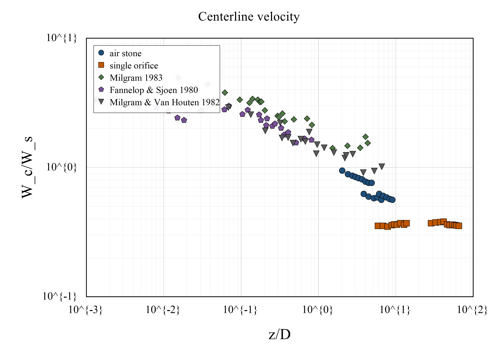
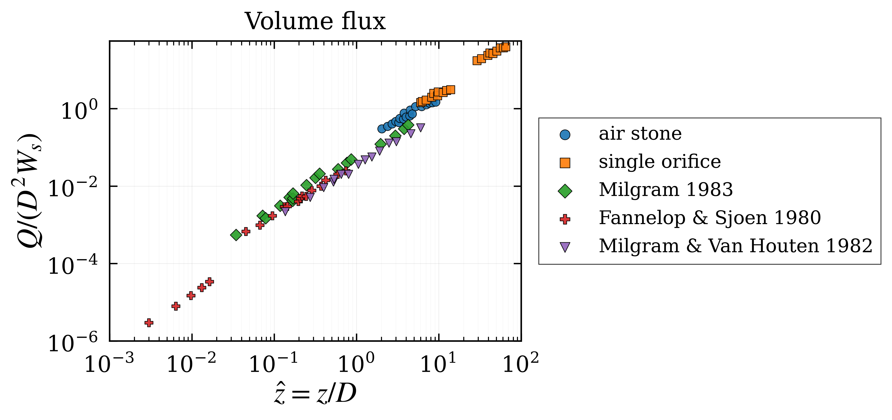

Data catalog
Each record provides the paper DOI and two data download options. CSV files are the primary machine-readable data files; XLSX files are formatted companion workbooks for easier inspection.
| Publication | Data type | DOI | CSV | XLSX | Notes |
|---|---|---|---|---|---|
| Milgram, J. H. (1983). Mean flow in round bubble plumes. Journal of Fluid Mechanics, 133, 345–376. | Tabular data | DOI | CSV | XLSX |
Selected dimensional tabular data from Milgram’s compiled mean-flow tables. The data
combine several source studies, so use source_table and
source_study to identify each block. Useful for plume width, velocity, flux,
gamma, and alpha values where reported.
|
| Li, G., Wang, B., Wu, H., & DiMarco, S. F. (2020). Impact of bubble size on the integral characteristics of bubble plumes in quiescent and unstratified water. International Journal of Multiphase Flow, 125, 103230. | Nondimensionalized comparison data | DOI | CSV | XLSX | Quiescent, unstratified-water experiments comparing air-stone and single-orifice bubble plumes. The dataset provides nondimensional scaling curves for plume half-width, centerline velocity, volume flux, and momentum flux. Air-stone and single-orifice series are kept as separate paired columns. |
| Wang, B., Lai, C. C. K., & Socolofsky, S. A. (2019). Mean velocity, spreading and entrainment characteristics of weak bubble plumes in unstratified and stationary water. Journal of Fluid Mechanics, 874, 102–130. | Nondimensionalized weak bubble plume data | DOI | CSV | XLSX | Weak bubble-plume experiments in unstratified, stationary water. The dataset includes normalized mean velocity, plume half-width, apparent entrainment coefficient, volume flux, and momentum flux. Current data are organized by Q1 and Q2 flow cases. |
| Kobus, H. E. Analysis of the flow induced by air-bubble systems. Coastal Engineering Proceedings, Chapter 65. | Single-orifice mean-flow data | DOI | CSV | XLSX | Single-orifice mean-flow data from an early air-bubble-system study. The current dataset includes centerline velocity, radial velocity profiles, and volume-flux ratio. Row-of-orifices data are not included in this first version. |
| Seol, D.-G., Bhaumik, T., Bergmann, C., & Socolofsky, S. A. (2007). Particle Image Velocimetry Measurements of the Mean Flow Characteristics in a Bubble Plume. Journal of Engineering Mechanics, 133(6), 665–676. | Alpha / entrainment-coefficient data | DOI | CSV | XLSX | PIV-based bubble-plume study focused on mean-flow characteristics. The current repository file includes only entrainment-coefficient alpha data from selected figures. Other velocity-field quantities from the paper are not included in this first alpha-only version. |
| Mingotti, N., & Woods, A. W. (2023). Experiments on fluid entrainment and slip in continuous bubble plumes. Journal of Fluid Mechanics, 973, A22. | Slip-plume mean-flow and volume-flux scaling data | DOI | CSV | XLSX | Continuous bubble-plume experiments in the slip-plume regime. The dataset includes bubble-radius spreading coefficient, liquid-to-bubble radius ratio, liquid-to-bubble velocity ratio, and the slip-plume volume-flux coefficient lambda. Lambda is not the same as the classical entrainment coefficient alpha. |
| Fraga, B., Stoesser, T., Lai, C. C. K., & Socolofsky, S. A. (2016). A LES-based Eulerian–Lagrangian approach to predict the dynamics of bubble plumes. Ocean Modelling, 97, 27–36. | LES-based bubble plume scaling data | DOI | CSV | XLSX | LES-based Eulerian–Lagrangian computational bubble-plume dataset. The reconstructed data include plume radius, entrainment velocity, mass/volume flux, and centerline velocity scaling. Series are grouped by bubble diameter, Dp = 1, 2, and 4 mm. |
Reproducible plots
The notebook can generate plots for any available paper and can overlay compatible quantities across papers. The example below shows the reconstructed plot set for Li et al. 2020.
Example: Li et al. 2020




Notes
- CSV files are the primary machine-readable data files.
- XLSX files are formatted companion workbooks with a Details sheet and a Data sheet.
- Older split CSV files are retained only as source/development files and are not the main public downloads.
- Future datasets should follow the same structure: one CSV and one formatted XLSX per paper.